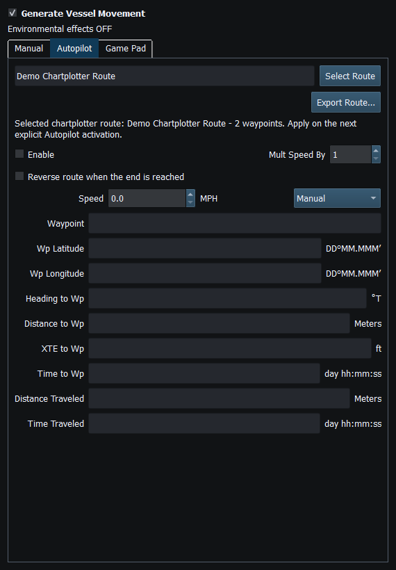
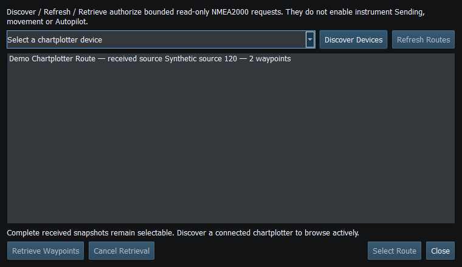

Select Chartplotter Route uses complete received route snapshots and, on eligible interfaces, a bounded active route client. The target must provide the requested NMEA2000 route service.
Axiom route retrieval uses Group Function requests and correlated route/waypoint responses. Database lists, route lists, waypoint catalogues and Navigation Route/Waypoint Information are different services; a PGN 129285 response alone is not proof of saved-route database enumeration. Counts are checked, waypoint IDs need not be contiguous, and requests do not guess selectors or paginate without the supported sequence.
Network NMEA2000 supports Axiom route retrieval through the compatible bridge/client connection. SocketCAN, CANable SLCAN and Waveshare expose the route client; the target must support its request/response service. Actisense active route service is disabled in both builds.
Cancel, Stop/F12, identity changes, disconnects, invalid responses and timeouts end the operation. Reconnect and authorize a new request when needed. Retrieval does not edit stored routes or activate Follow/Goto/Track.

Figure 79. Select a complete received route for the next Autopilot run. Click to enlarge.

Figure 80. Review available routes and completeness. Discovery and retrieval use their own controls. Click to enlarge.
Route Overview · GPX/KML Import · GPX/KML Export · Route Requests and Authorization · Navigation Measurements · Connection Troubleshooting · Enable, Dispatch and Sending · Engineering Units